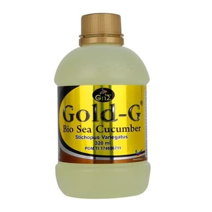

Jelly Gamat
Gold-G
Tidak repot beli jelly gamat dengan beli jelly gamat di jelly gamat online. Rasakan manfaat dan khasiat jelly gamat dari jelly gamat online. Lebih mudah dan murah serta tetap sehat dengan suplemen jelly gamat
Pesan Sekarang